首先您必须建立新的OpenXava项目：
会出现一个窗口，之后在 Project name 输入项目名称：Invoicing，请注意 Invoicing 的 "I" 必须是大写，以确保之后的连结都不会有问题，此外我们在此教学将选择英文（English）。最后点击 Finish。
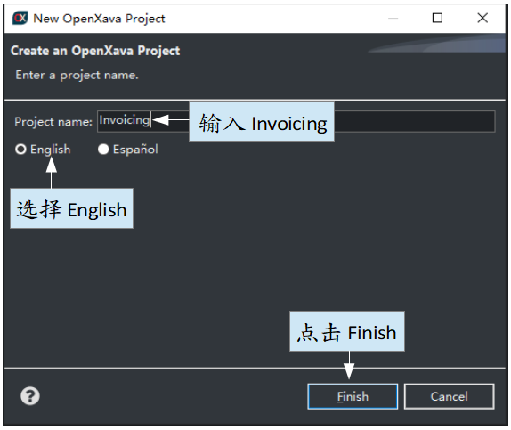
现在项目已建成，您可以开始写代码了
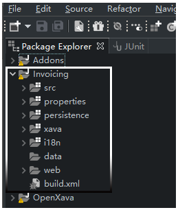
创建第一个实体
开发应用程序非常简单：您只需要添加实体使您的应用程序扩展。
我们将从 Customer 简易版本开始，只有编号和描述，选择 com.yourcompany.invoicing.model 包并点下 New Java Class 按键。
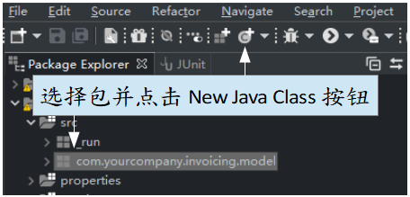
再来在 Name 写下 Customer 为类名并按下 Finish。
注意Customer的"C"必须是大写，在Java所有类的开头都是大写。
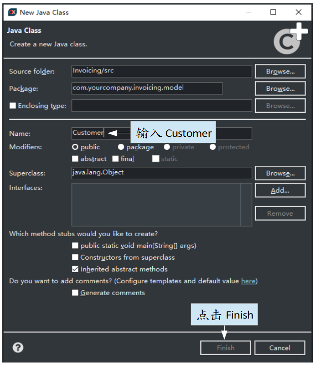
Eclipse提供的只是最基本的代码：
package com.yourcompany.invoicing.model;
public class Customer {
}
现在您得把此类转换成适合OpenXava的实体。您只需要添加 @Entity 注解，number 和 description 属性
package com.yourcompany.invoicing.model;
import javax.persistence.*;
import org.openxava.annotations.*;
import lombok.*;
@Entity // 这会把客户类标为实体
@Getter @Setter // 这让下面所有字段都可以被访问
public class Customer {
@Id // number属性是密钥，通常默认必须有密钥
@Column(length=6) // 列的长度会用在用户界面级（UI level）和数据库级（DB level）
int number;
@Column(length=50) // 列的长度会用在用户界面级（UI level）和数据库级（DB level）
@Required // 如果 name 属性为空，將顯示錯誤
String name;
}
现在您已有足够的代码（一个类）来运行应用程序。
运行应用程序
在 Invoicing 项目上点击滑鼠右键并选择 Run As>Java Application
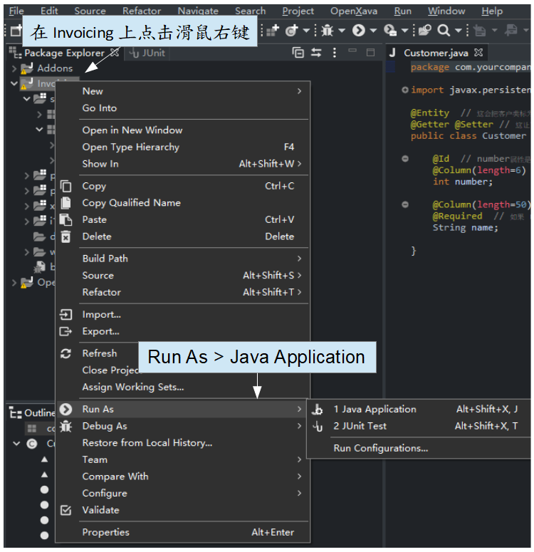
现在您的应用程序已经在运行。请开启您的浏览器（Chrome, Firefox, Internet Explorer 11, Edge o Safari）并输入以下连结：
这是您第一次运行此应用程序，请点击登络按钮并在用户/密码输入 admin/admin 再点击进入
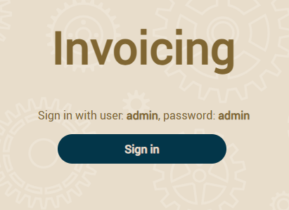
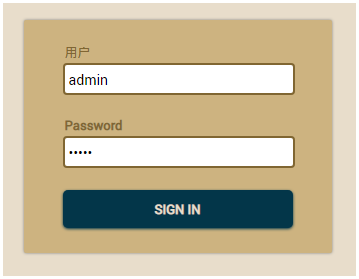
在左边会有模块列表，选择 Customers
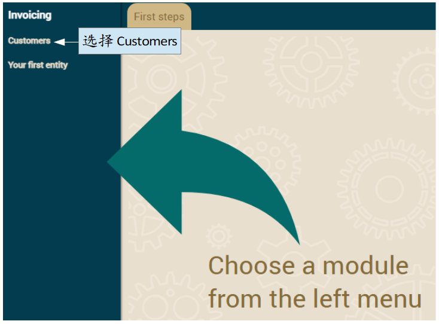
我们将使用 Customers 模块来创建新的客户，只需要输入编号和名称并按下保存
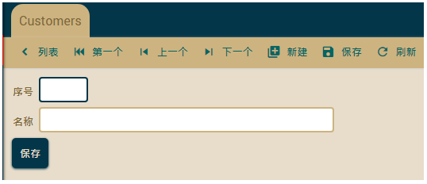
点击 列表 可以察看已创建的客户。恭喜！您已成功运行第一个 OpenXava 应用程序。
修改应用程序
从现在开始，使用OpenXava开发应用变的非常容易。只需要编写一个类就可以马上在浏览器看到成果。
现在我们创建另一个实体为 Product，选择 com.yourcompany.invoicing.model 包，点下 New Java Class 按键并在 Name 写下 Product 为类名并按下 Finish。
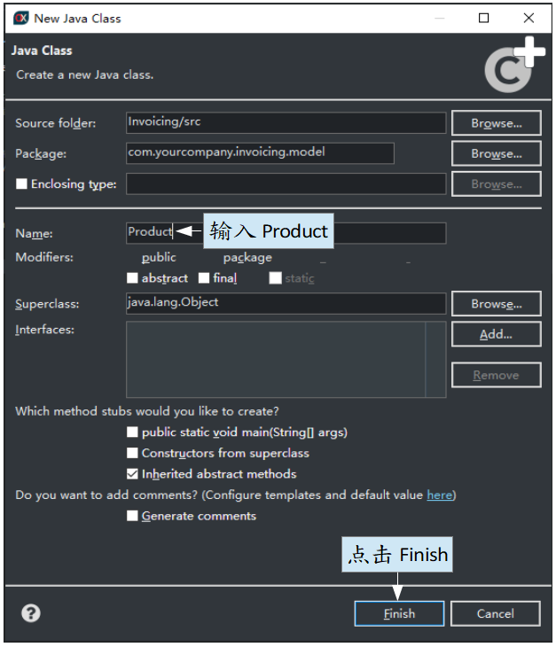
在 Product 里编写以下代码：
package com.yourcompany.invoicing.model;
import javax.persistence.*;
import org.openxava.annotations.*;
import lombok.*;
@Entity @Getter @Setter
public class Product {
@Id @Column(length=9)
int number;
@Column(length=50) @Required
String description;
}
现在按下 Run 按钮，这会重启应用程序
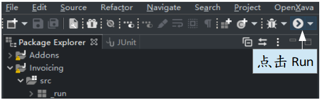
在您的浏览器输入以下网址来查看刚创建的实体：
使用 admin/admin 登络后将会看到
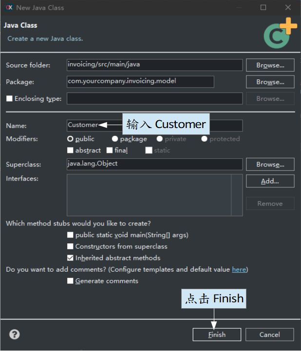
是的！您又成功运行新的模块了，而且只需编写一个相对简单的类。现在您只需要专注于扩展您的应用程序。
有任何问题吗？
恭喜！您已创建您的第一个 OpenXava 应用程序，若您在过程当中遇到任何问题，可以在论譠提问：
入门教学是OpenXava课程中的第一章，该课程会教您如何使用 OpenXava及其它Java相关技术、工具和框架开发企业应用程序。我们将从零开始一步一步的开发一个应用程序，该应用是个包含开发票、管理客户、产 品等的小型应用。开发这应用程序是为了认识和学习业务程序中的典型案例，您可以将在开发票应用所学的内容应用到其它领域的其它业务应用中。
这是课程的内容：
- 入门：
- 使用 Java 建模：
- Inheritance:
- Basic business logic:
- Advanced validation:
- Refining the standard behavior:
- Behavior & business logic:
- References & collections:
- Appendices:
您已准备好进入下一章，但您也可以考虑阅读一些基础知识，例如：
您想使用 IntelliJ、MySQL、PostgreSQL、Oracle、Microsoft SQL Server、AS/400、Informix、Db2 或 Firebird 吗? 您想要一个详细的参考指南吗？ 在
OpenXava 文檔 中都找的到并且还有更多内容。
您准备好了吗？ 到第二章